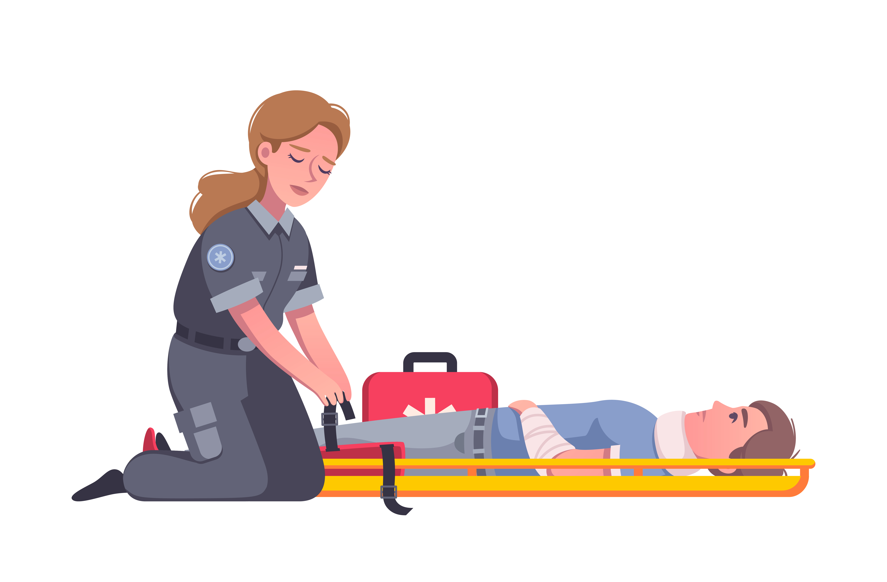
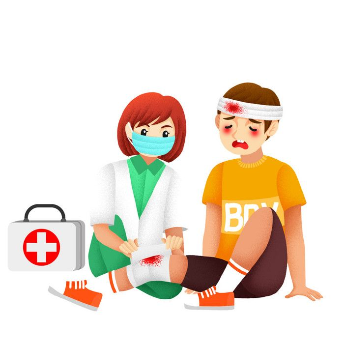
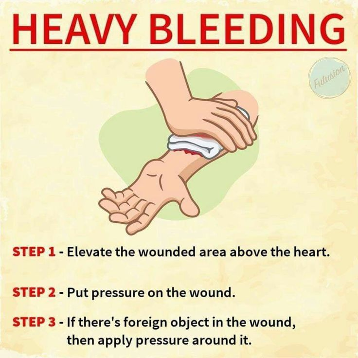
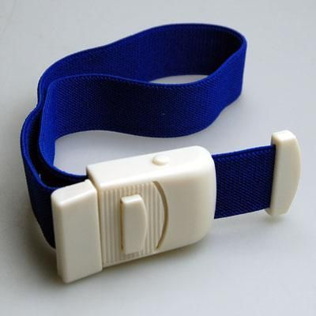
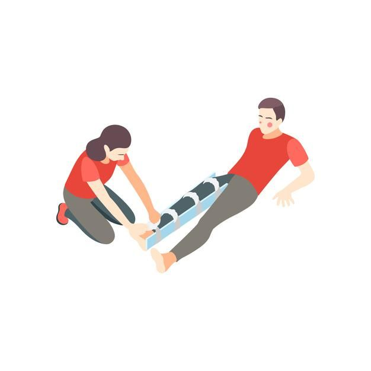

الإصابات والصدمات: طرق الإسعاف الأولي لعلاج الجروح، إيقاف النزيف، تثبيت الكسور ونقل المصاب بأمان
مقدمة :
تُعد الإصابات والصدمات من الحالات الطبية الطارئة الشائعة التي قد يتعرض لها أي شخص في حياته اليومية، سواء بسبب الحوادث المنزلية، أو حوادث المرور، أو السقوط، أو أثناء ممارسة الرياضة. ويحتاج التعامل مع هذه الحالات إلى معرفة أساسيات الإسعاف الأولي لتقليل المضاعفات وإنقاذ الحياة قبل وصول الطاقم الطبي. في هذا المقال المفصل سنتناول كيفية التعامل مع الجروح، النزيف، الكسور، إصابات العمود الفقري، وكذلك الطرق الصحيحة لنقل المصاب على النقالة.
الأهداف الأساسية للإسعاف الأولي في حالات الصدمات :
- معالجة الجروح البسيطة والمعقدة.
- إخراج الضحية من منطقة الخطر.
- السيطرة على النزيف.
- تثبيت الأطراف المكسورة.
- ضمان نقل المصاب على النقالة بأمان.
أولاً: معالجة الجروح
- 1. الجروح البسيطة
- غسل اليدين جيدًا أو ارتداء القفازات.
- تنظيف الجرح بالماء والصابون لإزالة الأوساخ.
- تعقيم الجرح باستخدام مطهر مناسب.
- وضع ضماد معقم لحمايته.
- 2. الجروح الخطيرة
- الجروح الخطيرة تتميز بـ:
- كونها واسعة أو عميقة.
- حدوث تهتك أو سحق في الأنسجة.
- نزيف شديد.
- وجود جسم غريب داخل الجرح.
- كيفية التعامل:
- اغسل يديك أو ارتدِ القفازات.
- غطِّ الجرح بقطعة قماش نظيفة أو شاش معقم.
- لا تحاول إزالة الأجسام الغريبة.
- إذا كان هناك نزيف بدون جسم غريب: اضغط على الجرح واستدعِ الإسعاف فورًا.
- دور المسعف هنا حماية الجرح من العدوى فقط، أما العلاج النهائي فيتم في المستشفى.
ثانياً: السيطرة على النزيف
- كيفية التعامل مع نزيف شديد
- تجنب ملامسة الدم قدر المستطاع.
- اضغط على الجرح باستثناء الحالات التالية:
- وجود جسم غريب داخل الجرح.
- وجود جروح متعددة.
- نزيف لا يمكن السيطرة عليه ⇒ استعمال الرباط الضاغط (Garrot). 
- متى نستعمل الرباط الضاغط؟
- كخيار أخير بعد فشل الضغط اليدوي.
- إذا كان هناك عدة ضحايا ويجب التفرغ لهم جميعًا.
- مكان وضع الرباط :
- في الذراع عند إصابة الأطراف العلوية.
- في الفخذ عند إصابة الأطراف السفلية.
- أدوات يمكن استعمالها كرباط :
- وشاح.
- منديل.
- ربطة عنق.
- حزام.
- تقنية وضع الرباط (الطريقة الأولى) :
- 1. استدعِ الإسعاف.
- 2. مدد الضحية.
- 3. ضع رباطًا عريضًا وغير مطاطي حول الطرف.
- 4. اربطه جيدًا حتى يتوقف النزيف.
- 5. ضع ضمادًا معقمًا على الجرح.
- 6. علّق بطاقة على الضحية تُوضح ساعة وضع الرباط.
- يجب أن يبقى الرباط مرئيًا ولا يتم فكه إلا في المستشفى.
ثالثاً: الكسور
- الكسر هو انقطاع استمرارية العظم.
- كسر مغلق: بدون جرح مرافق.
- كسر مفتوح: مع وجود جرح يفتح على العظم ويزيد خطر العدوى.
- الأعراض :
- ألم شديد يزداد عند الحركة.
- سماع طقطقة عند الكسر.
- تورم وتشوه مكان الإصابة.
- أحيانًا لا يُكشف إلا بالأشعة.
- تعليمات عامة :
- لا تحرك المصاب قبل تثبيت الطرف المكسور.
- لا تحاول إعادة العظم إلى مكانه.
- لا تعطِ المصاب طعامًا أو شرابًا لاحتمال حاجته إلى عملية جراحية.
رابعاً: التثبيت المؤقت للكسور
- الأدوات :
- جبائر جاهزة (خشب، معدن، بلاستيك صلب أو مرن).
- بدائل: جرائد، كرتون، أغصان، مقابض مكنسة، قطع خشبية.
- احتياطات :
- يجب تبطين الجبائر بالقطن أو الملابس.
- تُربط الأربطة على الجبيرة لا على الجلد مباشرة.
- لا تُشد الأربطة كثيرًا لتفادي انقطاع الدم.
خامساً: كسور الأطراف
- 1. الطرف العلوي :
- الذراع: وضع جبيرتين (داخلية من الإبط إلى المرفق، وخارجية من الكتف إلى المرفق).
- المرفق: إذا كان مثنيًا يوضع في وشاح، وإذا كان ممدودًا توضع جبائر من الإبط حتى اليد.
- الساعد: يوضع جبيرتان تصلان إلى أطراف الأصابع، مع تثبيت الساعد على الصدر.
- 2. الطرف السفلي :
- الساق والركبة: وضع جبيرتين من الفخذ حتى ما بعد القدم.
- الفخذ والورك: جبيرة طويلة من الإبط حتى القدم (من الخارج)، وأخرى من أصل الفخذ حتى القدم (من الداخل).
- عند غياب الجبائر: يتم ربط الرجل المصابة مع السليمة.
سادساً: إصابات العمود الفقري والرقبة
- علامات الاشتباه :
- ألم في الرقبة.
- ظروف الحادث مثل السقوط أو ضربة مفاجئة.
- شلل أو ضعف في الأطراف.
- فقدان الوعي.
- ما يجب فعله :
- لا تحرك المصاب.
- ضع دعامة للعنق (Collier cervical) بالحجم المناسب.
- إذا لم تتوفر الدعامة، يمكن صنع واحدة من الكرتون.
سابعاً: نزع الخوذة عند الدراجين
- يُنزع فقط في حال:
- توقف التنفس.
- فقدان الوعي والحاجة لفتح مجرى الهواء.
- إذا كان المصاب واعيًا: لا تنزع الخوذة، فقط افتح حاجبها للمساعدة على التنفس.
ثامناً: نقل المصاب على النقالة

- هو وضع الضحية على نقالة لنقلها.
- أهم مبدأ:
- الحفاظ على استقامة محور الرأس – الرقبة – الجذع.
- قواعد أساسية:
- لا يُنقل المصاب إلا إذا كان في حالة مستقرة.
- يجب تقليل حركات الجسد أثناء الرفع.
- يُرفع المصاب قليلًا فقط لإدخال النقالة تحته (تقنية الجسور).
- على المسعفين تجنب إصابة ظهورهم أثناء الرفع (يجب استعمال عضلات الفخذين).
- الوقوف بشكل ثابت: القدمين متباعدتين قليلًا وغير متوازيين، مع تنسيق الحركات بأوامر قائد الفريق.
- يجب أن يختار القائد أماكن المسعفين حسب قوتهم البدنية.
- تجهيز النقالة :
- يمكن الاستعانة بـ:
- نقالة عادية أو مزودة بعجلات.
- لوح صلب (plan dur).
- أي أداة صلبة يمكن تمريرها أسفل المصاب.
- إذا كانت الإصابة بسيطة أو مجرد وعكة، يمكن أن يتعاون المصاب ويجلس بنفسه على النقالة. وإذا كان قادرًا على المشي: يمكن مساعدته على المشي (aide à la marche).
- تقنية الرفع (Le pont amélioré) :
- هي التقنية المرجعية لأنها الأكثر أمانًا، لكنها تحتاج لخمسة مسعفين (واحد قائد).
- أحيانًا يُضاف مسعف سادس لمراقبة إصابة معينة.
- الخطوات:
- 1. توضع النقالة بمحاذاة الضحية، ويفضل من جهة القدمين.
- 2. يشرح القائد للضحية (إذا كانت واعية) ما سيحدث ويطلب منها أن تضع ذراعيها على صدرها.
- 3. القائد (المسعف الأول) يتمركز عند الرأس ويمسكها جيدًا.
- 4. المسعف الثاني يتمركز عند القدمين ويمسك الكاحلين.
- 5. المسعف الثالث يقف فوق الحوض ويرفعه.
- 6. المسعف الرابع يقف فوق الكتفين ويرفع الظهر.
- 7. المسعف الخامس يدفع النقالة في الاتجاه المناسب.
- جميع الحركات تتم بتنسيق مع أوامر القائد، مع الحفاظ على استقامة الرأس – الرقبة – الجذع.
- حمل النقالة (Brancardage) :
- أربع مسعفين: كل واحد يمسك بمقبض.
- ثلاثة مسعفين: اثنان عند الرأس (لأنها أثقل)، والثالث عند القدمين.
- مسعفان فقط: أحدهما عند الرأس، الآخر عند القدمين، كل منهما يمسك بمقبضين.
- القائد يضع نفسه بحيث يتمكن من مراقبة الضحية باستمرار.
تذكير مهم جدًا (À retenir)
- لا تسمح للمصاب أن ينهض بنفسه.
- لا تحرك المصاب إلا بعد تثبيت الكسر.
- احرص على اللطف في التعامل، فكسر مغلق قد يتحول إلى مفتوح إذا حُرك بعنف.
- إذا كان هناك نزيف أو صدمة، عالجها قبل التثبيت.
- في حالة كسر مفتوح: لا تنظف الجرح ولا تحاول إعادة العظم إلى مكانه، فقط غطه بضماد معقم.
- لا تعطِ المصاب أكلًا أو شرابًا (لأن احتمال التخدير وارد).
الخاتمة :
تُعتبر معرفة قواعد الإسعاف الأولي في حالات الإصابات والصدمات أمرًا ضروريًا لإنقاذ الأرواح وتقليل المضاعفات. فالخطوات البسيطة مثل تنظيف الجروح، السيطرة على النزيف، تثبيت الكسور، وتثبيت الرقبة، كلها إجراءات قد تصنع الفارق بين الحياة والموت. ويبقى استدعاء فرق الإسعاف المختصة هو الإجراء الأهم لضمان العلاج الطبي السليم.